2023 National 5 Mathematics - Paper 2 marking instructions
Source: Scottish Qualifications Authority (SQA) / Qualifications Scotland. This is a StemInteract HTML companion, not an official HTML edition. Selectable text is supplied alongside original page images. Use the images or original PDF for equations, powers, fractions, vector notation, tables and diagrams; text extraction cannot fully preserve mathematical layout.
Jump to a question
PDF page 1
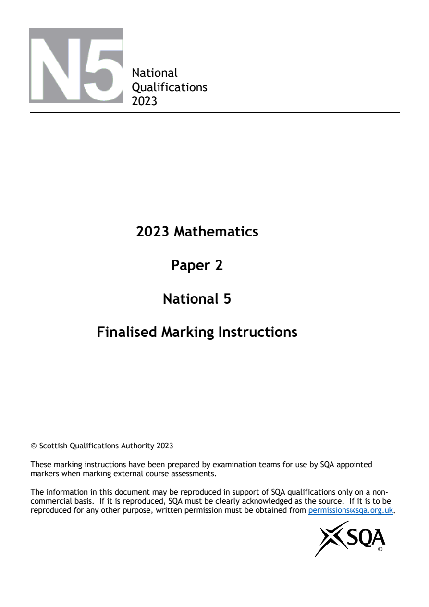
Selectable page text
National
Qualifications
2023
2023 Mathematics
Paper 2
National 5
Finalised Marking Instructions
Scottish Qualifications Authority 2023
These marking instructions have been prepared by examination teams for use by SQA appointed
markers when marking external course assessments.
The information in this document may be reproduced in support of SQA qualifications only on a non-
commercial basis. If it is reproduced, SQA must be clearly acknowledged as the source. If it is to be
reproduced for any other purpose, written permission must be obtained from permissions@sqa.org.uk.
©PDF page 2
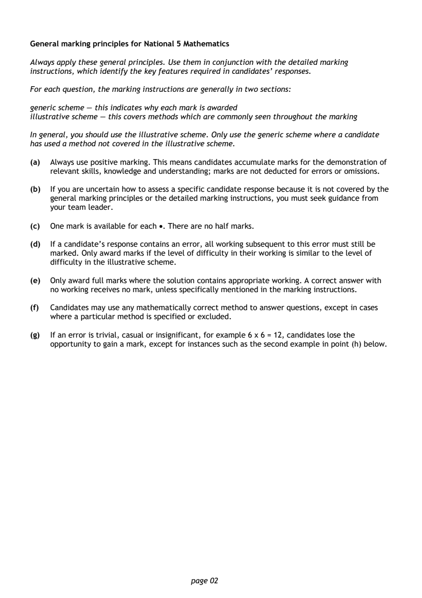
Selectable page text
General marking principles for National 5 Mathematics
Always apply these general principles. Use them in conjunction with the detailed marking
instructions, which identify the key features required in candidates’ responses.
For each question, the marking instructions are generally in two sections:
generic scheme — this indicates why each mark is awarded
illustrative scheme — this covers methods which are commonly seen throughout the marking
In general, you should use the illustrative scheme. Only use the generic scheme where a candidate
has used a method not covered in the illustrative scheme.
(a) Always use positive marking. This means candidates accumulate marks for the demonstration of
relevant skills, knowledge and understanding; marks are not deducted for errors or omissions.
(b) If you are uncertain how to assess a specific candidate response because it is not covered by the
general marking principles or the detailed marking instructions, you must seek guidance from
your team leader.
(c) One mark is available for each •. There are no half marks.
(d) If a candidate’s response contains an error, all working subsequent to this error must still be
marked. Only award marks if the level of difficulty in their working is similar to the level of
difficulty in the illustrative scheme.
(e) Only award full marks where the solution contains appropriate working. A correct answer with
no working receives no mark, unless specifically mentioned in the marking instructions.
(f) Candidates may use any mathematically correct method to answer questions, except in cases
where a particular method is specified or excluded.
(g) If an error is trivial, casual or insignificant, for example 6 x 6 = 12, candidates lose the
opportunity to gain a mark, except for instances such as the second example in point (h) below.
page 02PDF page 3
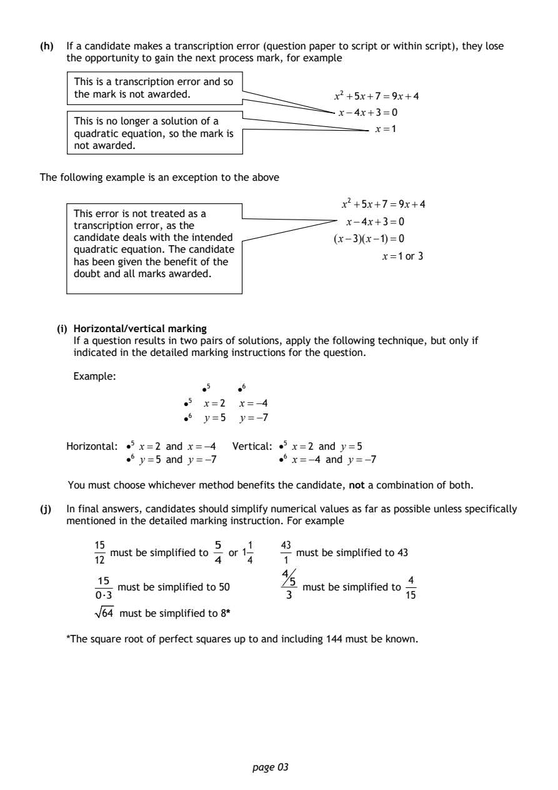
Selectable page text
(h) If a candidate makes a transcription error (question paper to script or within script), they lose
the opportunity to gain the next process mark, for example
This is a transcription error and so
the mark is not awarded. x² +5x+7 =9x+4
x−4x+3=0
This is no longer a solution of a
x=1
quadratic equation, so the mark is
not awarded.
The following example is an exception to the above
x² +5x+7 =9x+4
This error is not treated as a
x−4x+3=0
transcription error, as the
candidate deals with the intended (x−3)(x−1)=0
quadratic equation. The candidate
x=1 or 3
has been given the benefit of the
doubt and all marks awarded.
(i) Horizontal/vertical marking
If a question results in two pairs of solutions, apply the following technique, but only if
indicated in the detailed marking instructions for the question.
Example:
•5 •6
•5 x=2 x=−4
•6 y=5 y =−7
Horizontal: •5 x=2 and x=−4 Vertical: •⁵ x=2 and y=5
•6 y=5 and y =−7 •6 x=−4 and y =−7
You must choose whichever method benefits the candidate, not a combination of both.
(j) In final answers, candidates should simplify numerical values as far as possible unless specifically
mentioned in the detailed marking instruction. For example
15 5 1 43
must be simplified to or 1 must be simplified to 43
12 4 4 1
4
15 5 4
must be simplified to 50 must be simplified to
0·3 3 15
64 must be simplified to 8*
*The square root of perfect squares up to and including 144 must be known.
page 03PDF page 4
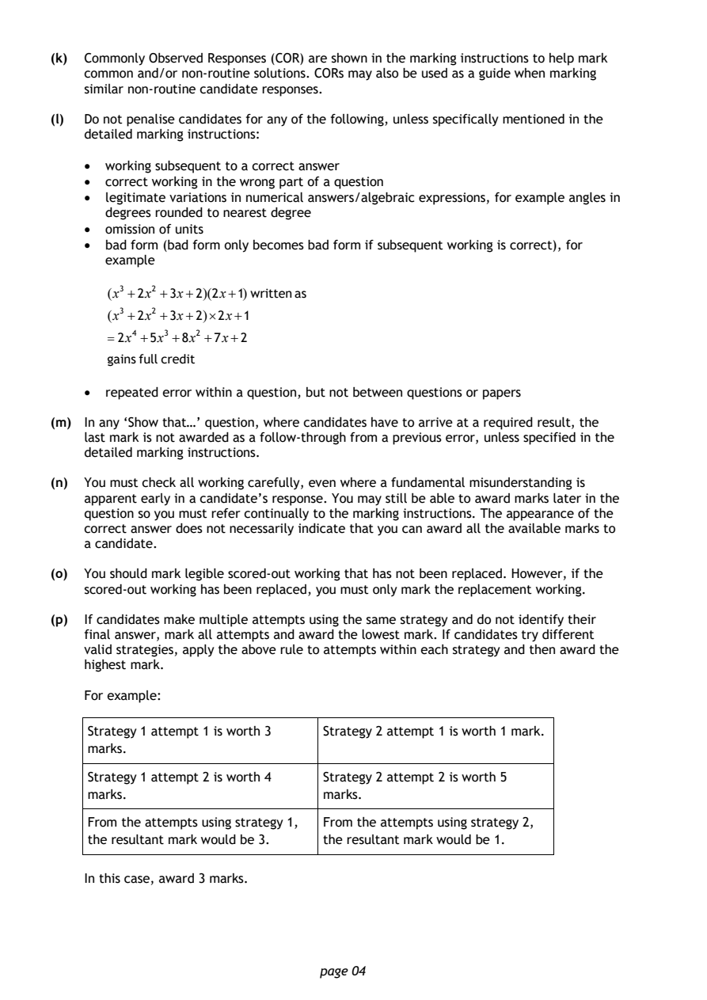
Selectable page text
(k) Commonly Observed Responses (COR) are shown in the marking instructions to help mark
common and/or non-routine solutions. CORs may also be used as a guide when marking
similar non-routine candidate responses.
(l) Do not penalise candidates for any of the following, unless specifically mentioned in the
detailed marking instructions:
• working subsequent to a correct answer
• correct working in the wrong part of a question
• legitimate variations in numerical answers/algebraic expressions, for example angles in
degrees rounded to nearest degree
• omission of units
• bad form (bad form only becomes bad form if subsequent working is correct), for
example
(x³ +2x² +3x+2)(2x+1) written as
(x³ +2x² +3x+2)×2x+1
=2x⁴ +5x³ +8x² +7x+2
gains full credit
• repeated error within a question, but not between questions or papers
(m) In any ‘Show that…’ question, where candidates have to arrive at a required result, the
last mark is not awarded as a follow-through from a previous error, unless specified in the
detailed marking instructions.
(n) You must check all working carefully, even where a fundamental misunderstanding is
apparent early in a candidate’s response. You may still be able to award marks later in the
question so you must refer continually to the marking instructions. The appearance of the
correct answer does not necessarily indicate that you can award all the available marks to
a candidate.
(o) You should mark legible scored-out working that has not been replaced. However, if the
scored-out working has been replaced, you must only mark the replacement working.
(p) If candidates make multiple attempts using the same strategy and do not identify their
final answer, mark all attempts and award the lowest mark. If candidates try different
valid strategies, apply the above rule to attempts within each strategy and then award the
highest mark.
For example:
Strategy 1 attempt 1 is worth 3 Strategy 2 attempt 1 is worth 1 mark.
marks.
Strategy 1 attempt 2 is worth 4 Strategy 2 attempt 2 is worth 5
marks. marks.
From the attempts using strategy 1, From the attempts using strategy 2,
the resultant mark would be 3. the resultant mark would be 1.
In this case, award 3 marks.
page 04PDF page 5
Paper 2, Question 1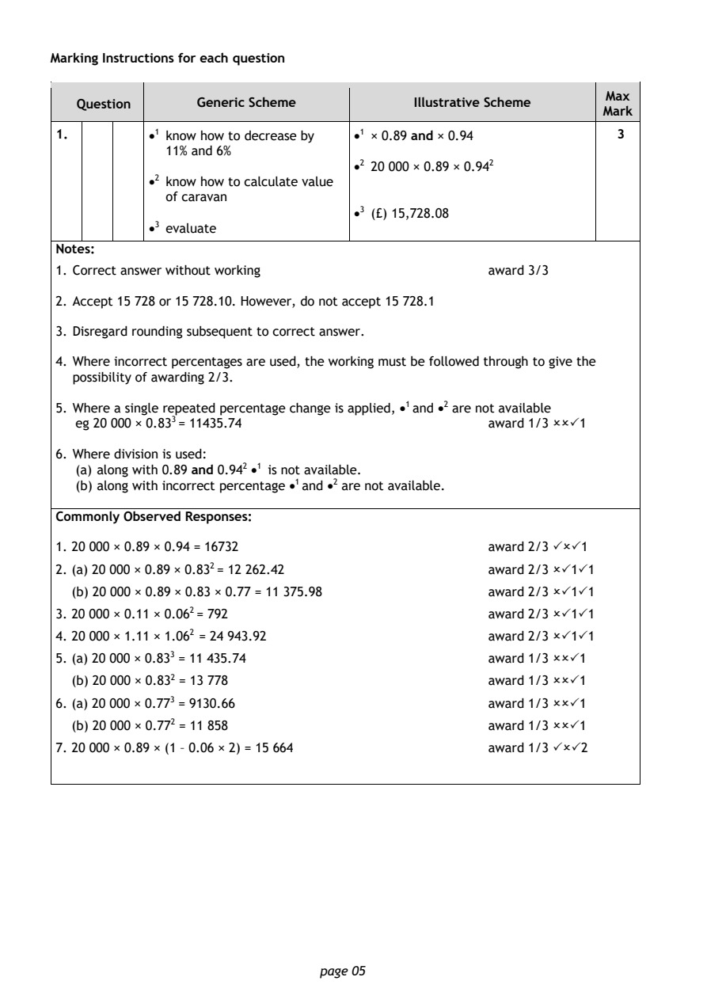
Selectable page text
Marking Instructions for each question
Max
Question Generic Scheme Illustrative Scheme
Mark
1. •1 know how to decrease by •1 × 0.89 and × 0.94 3
11% and 6%
•2 20 000 × 0.89 × 0.94²
•2 know how to calculate value
of caravan
•3 (£) 15,728.08
•3 evaluate
Notes:
1. Correct answer without working award 3/3
2. Accept 15 728 or 15 728.10. However, do not accept 15 728.1
3. Disregard rounding subsequent to correct answer.
4. Where incorrect percentages are used, the working must be followed through to give the
possibility of awarding 2/3.
5. Where a single repeated percentage change is applied, •¹ and •² are not available
eg 20 000 × 0.83³ = 11435.74 award 1/3 1
6. Where division is used:
(a) along with 0.89 and 0.94² •¹ is not available.
(b) along with incorrect percentage •¹ and •² are not available.
Commonly Observed Responses:
1. 20 000 × 0.89 × 0.94 = 16732 award 2/3 1
2. (a) 20 000 × 0.89 × 0.83² = 12 262.42 award 2/3 11
(b) 20 000 × 0.89 × 0.83 × 0.77 = 11 375.98 award 2/3 11
3. 20 000 × 0.11 × 0.06² = 792 award 2/3 11
4. 20 000 × 1.11 × 1.06² = 24 943.92 award 2/3 11
5. (a) 20 000 × 0.83³ = 11 435.74 award 1/3 1
(b) 20 000 × 0.83² = 13 778 award 1/3 1
6. (a) 20 000 × 0.77³ = 9130.66 award 1/3 1
(b) 20 000 × 0.77² = 11 858 award 1/3 1
7. 20 000 × 0.89 × (1 – 0.06 × 2) = 15 664 award 1/3 2
page 05PDF page 6
Paper 2, Question 2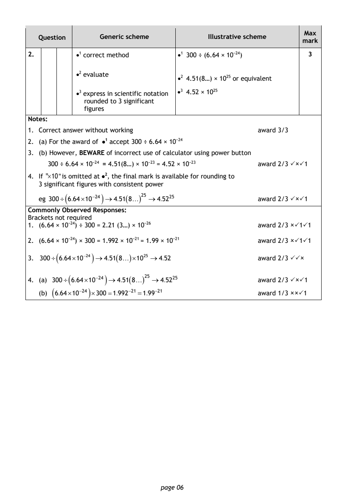
Selectable page text
Max
Question Generic scheme Illustrative scheme
mark
2. •1 correct method •1 300 ÷ (6.64 × 10⁻²⁴) 3
•2 evaluate
•2 4.51(8…) × 10²⁵ or equivalent
•3 express in scientific notation •3 4.52 × 10²⁵
rounded to 3 significant
figures
Notes:
1. Correct answer without working award 3/3
2. (a) For the award of •¹ accept 300 ÷ 6.64 × 10⁻²⁴
3. (b) However, BEWARE of incorrect use of calculator using power button
300 ÷ 6.64 × 10⁻²⁴ = 4.51(8…) × 10⁻²³ = 4.52 × 10⁻²³ award 2/3 1
4. If "×10"is omitted at •², the final mark is available for rounding to
3 significant figures with consistent power
eg 300÷ ( 6.64×10⁻²⁴ ) →4.51 ( 8) ² 5 →4.52²⁵ award 2/3 1
Commonly Observed Responses:
Brackets not required
1. (6.64 × 10⁻²⁴) ÷ 300 = 2.21 (3…) × 10⁻²⁶ award 2/3 11
2. (6.64 × 10⁻²⁴) × 300 = 1.992 × 10⁻²¹ = 1.99 × 10⁻²¹ award 2/3 11
3. 300÷ ( 6.64×10⁻²⁴ ) →4.51 ( 8)×10²⁵ →4.52 award 2/3
4. (a) 300÷ ( 6.64×10⁻²⁴ ) →4.51 ( 8) ² 5 →4.52²⁵ award 2/3 1
( )
(b) 6.64×10⁻²⁴ ×300=1.992⁻²¹=1.99⁻²¹ award 1/3 1
page 06PDF page 7
Paper 2, Question 3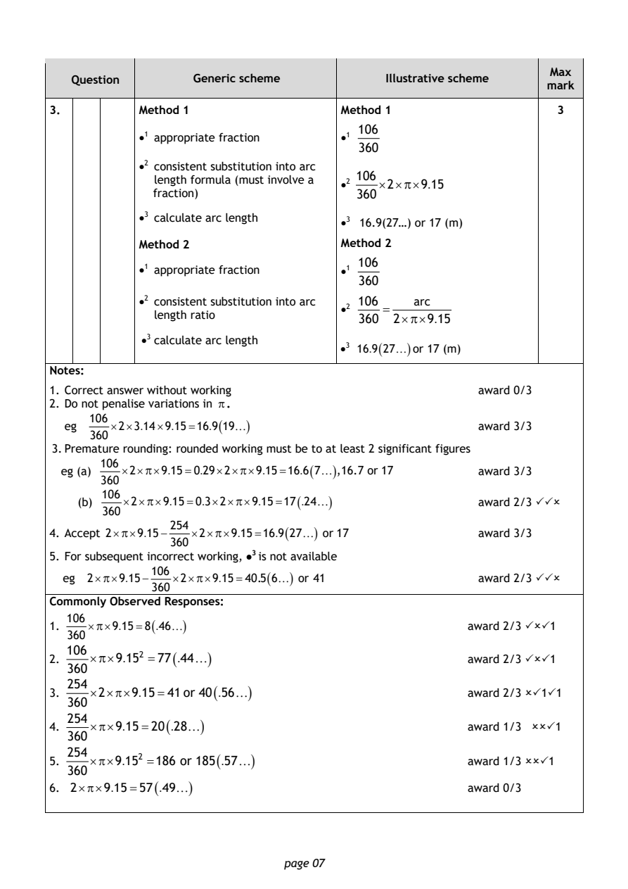
Selectable page text
Max
Question Generic scheme Illustrative scheme
mark
3. Method 1 Method 1 3
106
•1 appropriate fraction •1
360
•2 consistent substitution into arc
106
length formula (must involve a •2 ×2×π×9.15
fraction) 360
•3 calculate arc length
•3 16.9(27…) or 17 (m)
Method 2 Method 2
106
•1 appropriate fraction •1
360
•2 consistent substitution into arc 106 arc
•2 =
length ratio 360 2×π×9.15
•3 calculate arc length
•3 16.9(27)or 17 (m)
Notes:
1. Correct answer without working award 0/3
2. Do not penalise variations in π.
106
eg ×2×3.14×9.15=16.9(19) award 3/3
360
3. Premature rounding: rounded working must be to at least 2 significant figures
106
eg (a) ×2×π×9.15=0.29×2×π×9.15=16.6(7),16.7 or 17 award 3/3
360
106
(b) ×2×π×9.15=0.3×2×π×9.15=17(.24) award 2/3
360
254
4. Accept 2×π×9.15− ×2×π×9.15=16.9(27) or 17 award 3/3
360
5. For subsequent incorrect working, •³ is not available
106
eg 2×π×9.15− ×2×π×9.15=40.5(6) or 41 award 2/3
360
Commonly Observed Responses:
106
1. ×π×9.15=8(.46…) award 2/3 1
360
106
2. ×π×9.15² =77( .44) award 2/3 1
360
254
3. ×2×π×9.15=41 or 40( .56) award 2/3 11
360
254
4. ×π×9.15=20( .28) award 1/3 1
360
254
5. ×π×9.15² =186 or 185( .57) award 1/3 1
360
6. 2×π×9.15=57( .49) award 0/3
page 07PDF page 8
Paper 2, Question 4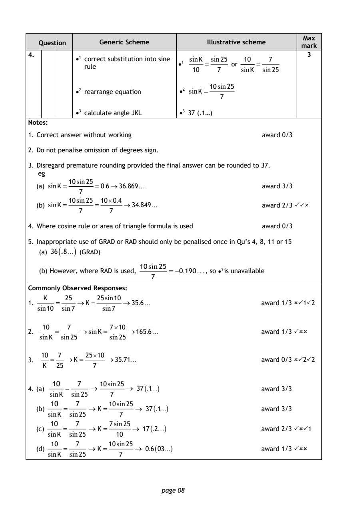
Selectable page text
Max
Question Generic Scheme Illustrative scheme
mark
4. 3
•1 correct substitution into sine sinK sin25 10 7
•1 = or =
rule
10 7 sinK sin25
10sin25
•2 rearrange equation •2 sinK =
7
•3 calculate angle JKL •3 37 (.1…)
Notes:
1. Correct answer without working award 0/3
2. Do not penalise omission of degrees sign.
3. Disregard premature rounding provided the final answer can be rounded to 37.
eg
10sin25
(a) sinK = =0.6→36.869 award 3/3
7
10sin25 10×0.4
(b) sinK = = →34.849 award 2/3
7 7
4. Where cosine rule or area of triangle formula is used award 0/3
5. Inappropriate use of GRAD or RAD should only be penalised once in Qu’s 4, 8, 11 or 15
( )
(a) 36 .8 (GRAD)
10sin25
(b) However, where RAD is used, = −0.190, so ●³ is unavailable
7
Commonly Observed Responses:
K 25 25sin10
1. = →K = →35.6 award 1/3 12
sin10 sin7 sin7
10 7 7×10
2. = →sinK = →165.6 award 1/3
sinK sin25 sin25
10 7 25×10
3. = →K = →35.71 award 0/3 22
K 25 7
10 7 10sin25
4. (a) = → → 37(.1) award 3/3
sinK sin25 7
10 7 10sin25
(b) = → K = → 37(.1) award 3/3
sinK sin25 7
10 7 7sin25
(c) = → K = → 17(.2) award 2/3 1
sinK sin25 10
10 7 10sin25
(d) = → K = → 0.6(03) award 1/3
sinK sin25 7
page 08PDF page 9
Paper 2, Question 5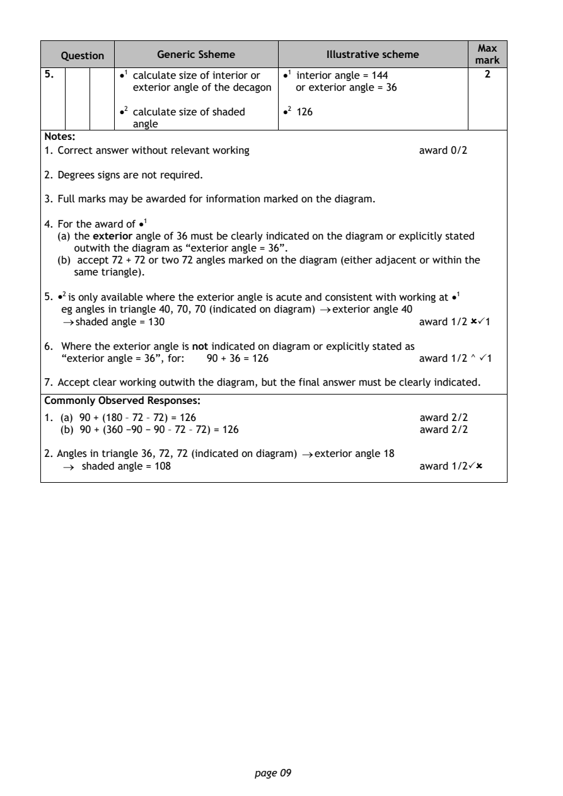
Selectable page text
Max
Question Generic Ssheme Illustrative scheme
mark
5. •1 calculate size of interior or •1 interior angle = 144 2
exterior angle of the decagon or exterior angle = 36
•2 calculate size of shaded •2 126
angle
Notes:
1. Correct answer without relevant working award 0/2
2. Degrees signs are not required.
3. Full marks may be awarded for information marked on the diagram.
4. For the award of •¹
(a) the exterior angle of 36 must be clearly indicated on the diagram or explicitly stated
outwith the diagram as “exterior angle = 36”.
(b) accept 72 + 72 or two 72 angles marked on the diagram (either adjacent or within the
same triangle).
5. •² is only available where the exterior angle is acute and consistent with working at •¹
eg angles in triangle 40, 70, 70 (indicated on diagram) →exterior angle 40
→shaded angle = 130 award 1/2 1
6. Where the exterior angle is not indicated on diagram or explicitly stated as
“exterior angle = 36”, for: 90 + 36 = 126 award 1/2 ^ 1
7. Accept clear working outwith the diagram, but the final answer must be clearly indicated.
Commonly Observed Responses:
1. (a) 90 + (180 – 72 – 72) = 126 award 2/2
(b) 90 + (360 −90 − 90 – 72 – 72) = 126 award 2/2
2. Angles in triangle 36, 72, 72 (indicated on diagram) →exterior angle 18
→ shaded angle = 108 award 1/2
page 09PDF page 10
Paper 2, Question 6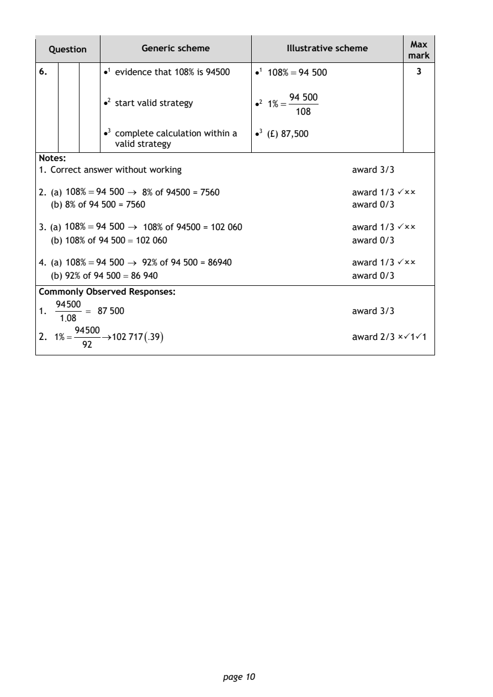
Selectable page text
Max
Question Generic scheme Illustrative scheme
mark
6. •1 evidence that 108% is 94500 •1 108%=94 500 3
94 500
•2 start valid strategy •2 1%=
108
•3 complete calculation within a •3 (£) 87,500
valid strategy
Notes:
1. Correct answer without working award 3/3
2. (a) 108%=94 500 → 8% of 94500 = 7560 award 1/3
(b) 8% of 94 500 = 7560 award 0/3
3. (a) 108%=94 500 → 108% of 94500 = 102 060 award 1/3
(b) 108% of 94 500 = 102 060 award 0/3
4. (a) 108%=94 500 → 92% of 94 500 = 86940 award 1/3
(b) 92% of 94 500 = 86 940 award 0/3
Commonly Observed Responses:
94500
1. = 87500 award 3/3
1.08
94500
2. 1%= →102717 ( .39 ) award 2/3 11
92
page 10PDF page 11
Paper 2, Question 7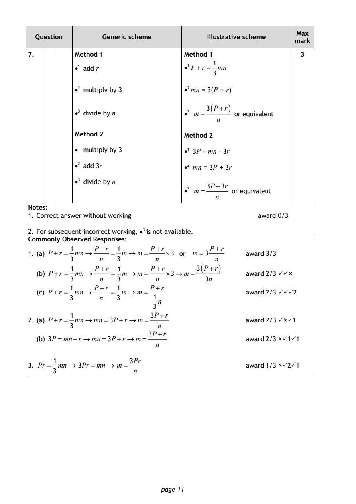
Selectable page text
Max
Question Generic scheme Illustrative scheme
mark
7. Method 1 Method 1 3
1
•1 add r •1P+r = mn
3
•2 multiply by 3 •2 mn = 3(P + r)
3 ( P+r )
•3 divide by n •3 m= or equivalent
n
Method 2 Method 2
•1 multiply by 3 •1 3P = mn – 3r
•2 add 3r •2 mn = 3P + 3r
•3 divide by n
3P+3r
•3 m= or equivalent
n
Notes:
1. Correct answer without working award 0/3
2. For subsequent incorrect working, •³ is not available.
Commonly Observed Responses:
1 P+r 1 P+r P+r
1. (a) P+r = mn→ = m→m= ×3 or m=3 award 3/3
3 n 3 n n
1 P+r 1 P+r 3 ( P+r )
(b) P+r = mn→ = m→m= ×3→m= award 2/3
3 n 3 n 3n
1 P+r 1 P+r
(c) P+r = mn→ = m→m= award 2/3 2
3 n 3 1
n
3
1 3P+r
2. (a) P+r = mn→mn=3P+r →m= award 2/3 1
3 n
3P+r
(b) 3P=mn−r →mn=3P+r →m= award 2/3 11
n
1 3Pr
3. Pr = mn → 3Pr =mn → m= award 1/3 21
3 n
page 11PDF page 12
Paper 2, Question 8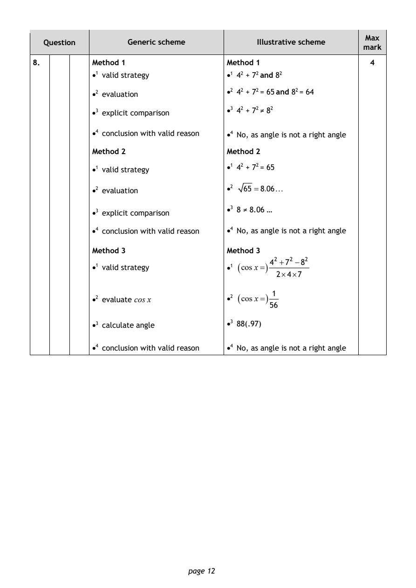
Selectable page text
Max
Question Generic scheme Illustrative scheme
mark
8. Method 1 Method 1 4
•1 valid strategy •1 4² + 7² and 8²
•2 evaluation •2 4² + 7² = 65 and 8² = 64
•3 explicit comparison •3 4² + 7² ≠ 8²
•4 conclusion with valid reason •4 No, as angle is not a right angle
Method 2 Method 2
•1 valid strategy •1 4² + 7² = 65
•2 evaluation •2 65 =8.06
•3 explicit comparison •3 8 ≠ 8.06 …
•4 conclusion with valid reason •4 No, as angle is not a right angle
Method 3 Method 3
4² +7² −8²
•1 valid strategy •1 ( cos x=)
2×4×7
1
•2 evaluate cos x •2 ( cos x=)
56
•3 calculate angle •3 88(.97)
•4 conclusion with valid reason •4 No, as angle is not a right angle
page 12PDF page 13
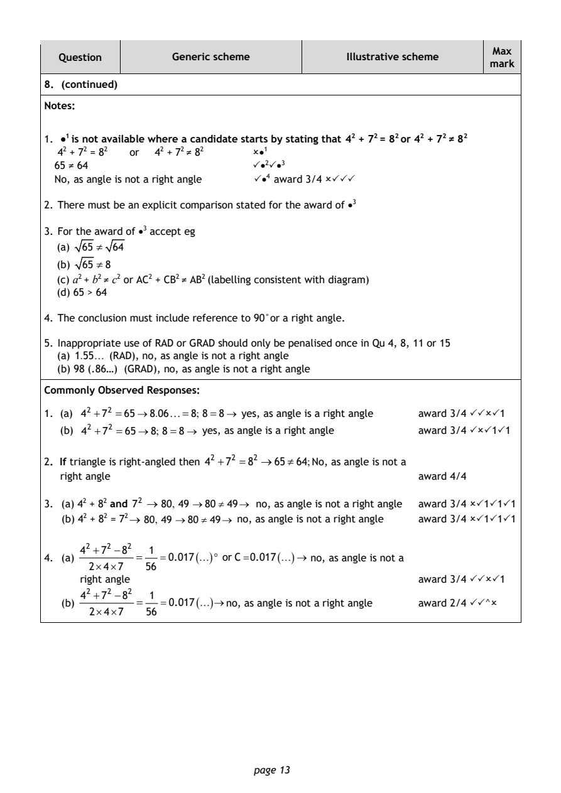
Selectable page text
Max
Question Generic scheme Illustrative scheme
mark
8. (continued)
Notes:
1. •¹ is not available where a candidate starts by stating that 4² + 7² = 8² or 4² + 7² ≠ 8²
4² + 7² = 8² or 4² + 7² ≠ 8² •1
65 ≠ 64 •2•3
No, as angle is not a right angle •4 award 3/4
2. There must be an explicit comparison stated for the award of •³
3. For the award of •³ accept eg
(a) 65 ≠ 64
(b) 65 ≠8
(c) a² + b² ≠ c² or AC² + CB² ≠ AB² (labelling consistent with diagram)
(d) 65 > 64
4. The conclusion must include reference to 90°or a right angle.
5. Inappropriate use of RAD or GRAD should only be penalised once in Qu 4, 8, 11 or 15
(a) 1.55 (RAD), no, as angle is not a right angle
(b) 98 (.86…) (GRAD), no, as angle is not a right angle
Commonly Observed Responses:
1. (a) 4² +7² =65→8.06=8; 8=8→ yes, as angle is a right angle award 3/4 1
(b) 4² +7² =65→8; 8=8→ yes, as angle is a right angle award 3/4 11
2. If triangle is right-angled then 4² +7² =8² →65≠64;No, as angle is not a
right angle award 4/4
3. (a) 4² + 8² and 7² → 80, 49 →80≠ 49→ no, as angle is not a right angle award 3/4 111
(b) 4² + 8² = 7²→ 80, 49 →80≠ 49→ no, as angle is not a right angle award 3/4 111
4² +7² −8² 1
4. (a) = =0.017()° or C=0.017()→ no, as angle is not a
2×4×7 56
right angle award 3/4 1
4² +7² −8² 1
(b) = =0.017()→no, as angle is not a right angle award 2/4 ^
2×4×7 56
page 13PDF page 14
Paper 2, Question 9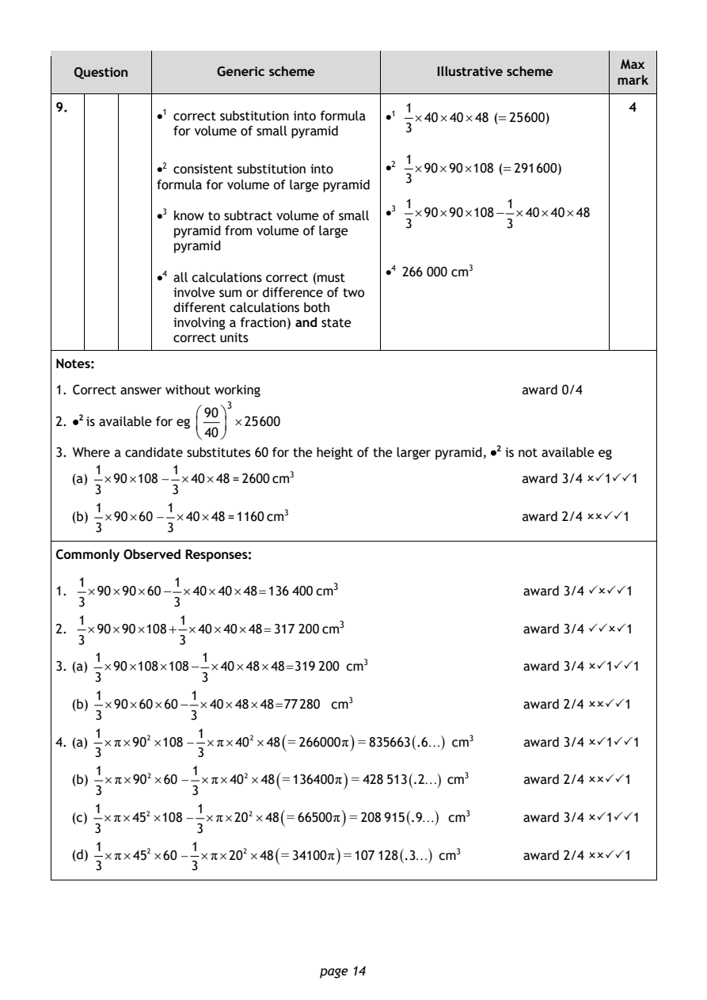
Selectable page text
Max
Question Generic scheme Illustrative scheme
mark
9. 1 4
•1 correct substitution into formula •1 ×40×40×48 (=25600)
for volume of small pyramid 3
1
•2 consistent substitution into •2 ×90×90×108 (=291600)
3
formula for volume of large pyramid
1 1
•3 know to subtract volume of small •3 ×90×90×108− ×40×40×48
3 3
pyramid from volume of large
pyramid
•4 all calculations correct (must •4 266 000 cm³
involve sum or difference of two
different calculations both
involving a fraction) and state
correct units
Notes:
1. Correct answer without working award 0/4
90³
2. •² is available for eg ×25600
40
3. Where a candidate substitutes 60 for the height of the larger pyramid, •² is not available eg
1 1
(a) ×90×108 − ×40×48=2600cm³ award 3/4 11
3 3
1 1
(b) ×90×60 − ×40×48=1160cm³ award 2/4 1
3 3
Commonly Observed Responses:
1 1
1. ×90×90×60− ×40×40×48=136 400 cm³ award 3/4 1
3 3
1 1
2. ×90×90×108+ ×40×40×48=317 200 cm³ award 3/4 1
3 3
1 1
3. (a) ×90×108×108− ×40×48×48=319200 cm³ award 3/4 11
3 3
1 1
(b) ×90×60×60− ×40×48×48=77280 cm³ award 2/4 1
3 3
1 1
4. (a) ×π×90²×108 − ×π×40²×48 ( =266000π ) =835663(.6) cm³ award 3/4 11
3 3
1 1
(b) ×π×90²×60 − ×π×40²×48 ( =136400π ) =428513(.2) cm³ award 2/4 1
3 3
1 1
(c) ×π×45²×108 − ×π×20²×48 ( =66500π ) =208 915(.9) cm³ award 3/4 11
3 3
1 1
(d) ×π×45²×60 − ×π×20²×48 ( =34100π ) =107128(.3) cm³ award 2/4 1
3 3
page 14PDF page 15
Paper 2, Question 10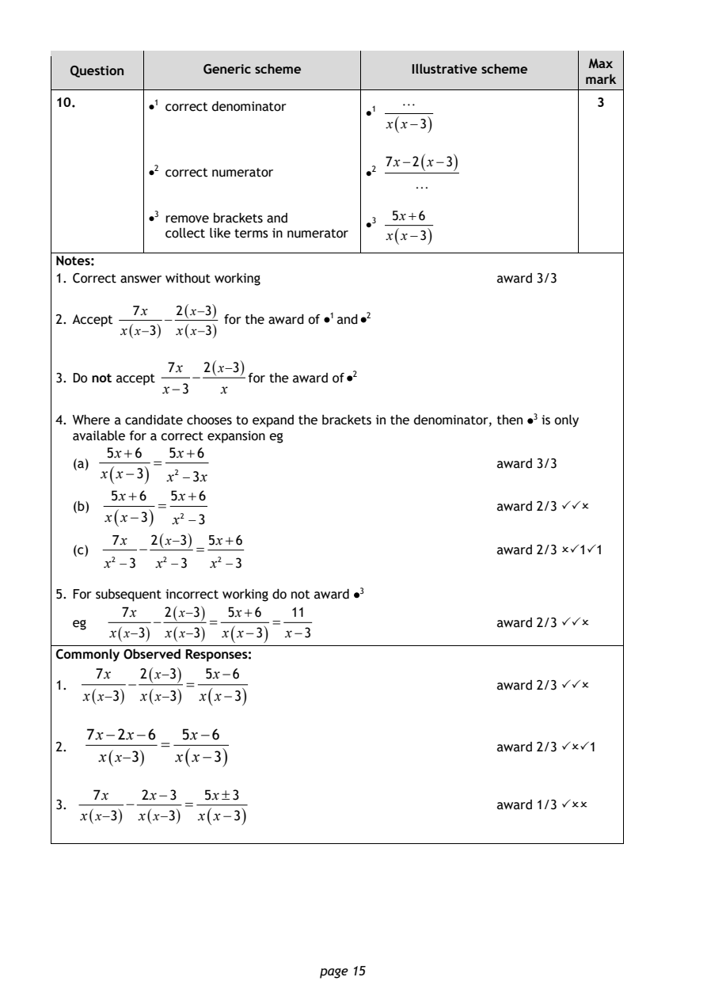
Selectable page text
Max
Question Generic scheme Illustrative scheme
mark
10. •1 correct denominator 3
•1
x ( x−3 )
7x−2 ( x−3 )
•2 correct numerator •2
•3 remove brackets and 5x+6
•3
collect like terms in numerator x ( x−3 )
Notes:
1. Correct answer without working award 3/3
7x 2(x−3)
2. Accept − for the award of •¹ and •²
x(x−3) x(x−3)
7x 2(x−3)
3. Do not accept − for the award of •²
x−3 x
4. Where a candidate chooses to expand the brackets in the denominator, then •³ is only
available for a correct expansion eg
5x+6 5x+6
(a) = award 3/3
x ( x−3 ) x² −3x
5x+6 5x+6
(b) = award 2/3
x ( x−3 ) x² −3
7x 2(x−3) 5x+6
(c) − = award 2/3 11
x² −3 x² −3 x² −3
5. For subsequent incorrect working do not award •³
7x 2(x−3) 5x+6 11
eg − = = award 2/3
x(x−3) x(x−3) x ( x−3 ) x−3
Commonly Observed Responses:
7x 2(x−3) 5x−6
1. − = award 2/3
x(x−3) x(x−3) x ( x−3 )
7x−2x−6 5x−6
=
2. award 2/3 1
x( x−3) x ( x−3 )
7x 2x−3 5x±3
3. − = award 1/3
x(x−3) x(x−3) x ( x−3 )
page 15PDF page 16
Paper 2, Question 11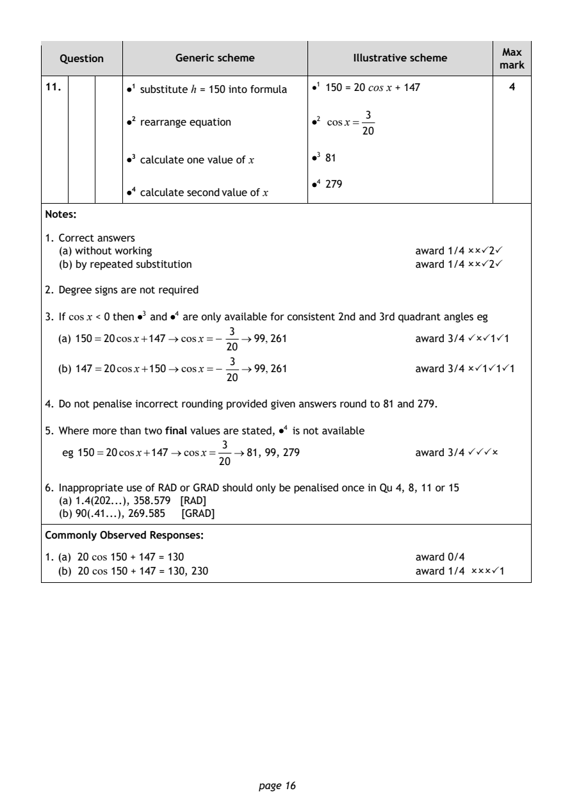
Selectable page text
Max
Question Generic scheme Illustrative scheme
mark
11. •1 substitute h = 150 into formula •1 150 = 20 cos x + 147 4
3
•2 rearrange equation •2 cosx=
20
•3 calculate one value of x •3 81
•4 279
•4 calculate second value of x
Notes:
1. Correct answers
(a) without working award 1/4 2
(b) by repeated substitution award 1/4 2
2. Degree signs are not required
3. If cos x < 0 then •³ and •⁴ are only available for consistent 2nd and 3rd quadrant angles eg
3
(a) 150=20cosx+147→cosx=− →99,261 award 3/4 11
20
3
(b) 147 =20cosx+150→cosx=− →99,261 award 3/4 111
20
4. Do not penalise incorrect rounding provided given answers round to 81 and 279.
5. Where more than two final values are stated, •⁴ is not available
3
eg 150=20cosx+147→cosx= →81, 99, 279 award 3/4
20
6. Inappropriate use of RAD or GRAD should only be penalised once in Qu 4, 8, 11 or 15
(a) 1.4(202...), 358.579 [RAD]
(b) 90(.41...), 269.585 [GRAD]
Commonly Observed Responses:
1. (a) 20 cos 150 + 147 = 130 award 0/4
(b) 20 cos 150 + 147 = 130, 230 award 1/4 1
page 16PDF page 17
Paper 2, Question 12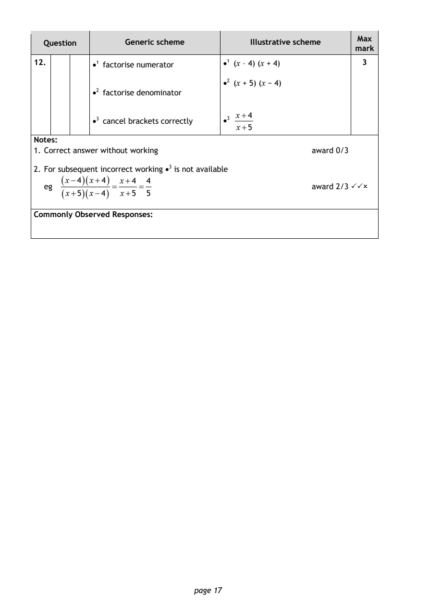
Selectable page text
Max
Question Generic scheme Illustrative scheme
mark
12. •1 factorise numerator •1 (x – 4) (x + 4) 3
•2 (x + 5) (x − 4)
•2 factorise denominator
x+4
•3 cancel brackets correctly •3
x+5
Notes:
1. Correct answer without working award 0/3
2. For subsequent incorrect working •³ is not available
( x−4 )( x+4 ) x+4 4
eg = = award 2/3
( x+5 )( x−4 ) x+5 5
Commonly Observed Responses:
page 17PDF page 18
Paper 2, Question 13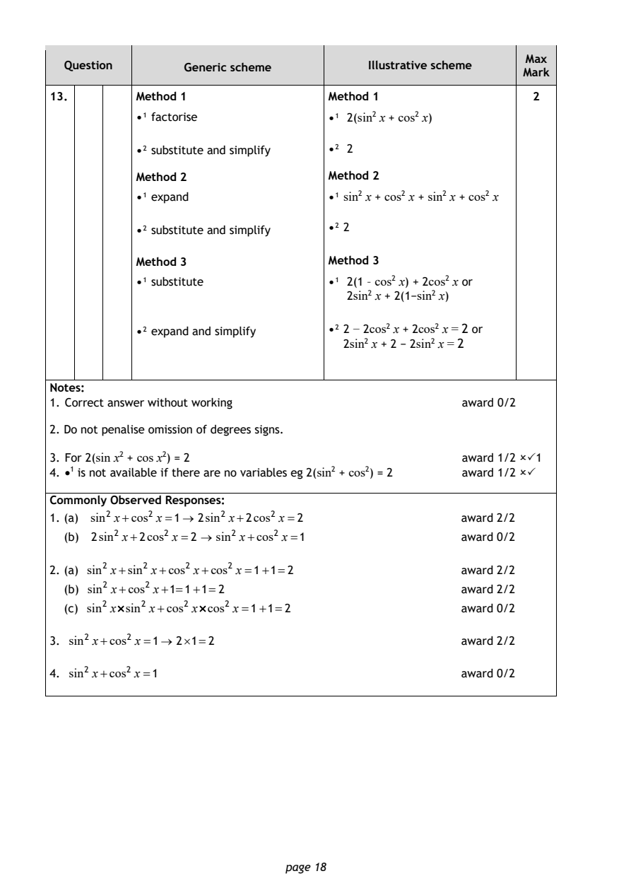
Selectable page text
Max
Question Generic scheme Illustrative scheme
Mark
13. Method 1 Method 1 2
•¹ factorise •¹ 2(sin² x + cos² x)
•² substitute and simplify •² 2
Method 2 Method 2
•¹ expand •¹ sin² x + cos² x + sin² x + cos² x
•² substitute and simplify •² 2
Method 3 Method 3
•¹ substitute •¹ 2(1 – cos² x) + 2cos² x or
2sin² x + 2(1−sin² x)
•² expand and simplify •² 2 − 2cos² x + 2cos² x = 2 or
2sin² x + 2 − 2sin² x = 2
Notes:
1. Correct answer without working award 0/2
2. Do not penalise omission of degrees signs.
3. For 2(sin x² + cos x²) = 2 award 1/2 1
4. •¹ is not available if there are no variables eg 2(sin² + cos²) = 2 award 1/2
Commonly Observed Responses:
1. (a) sin² x+cos² x=1→ 2sin² x+2cos² x=2 award 2/2
(b) 2sin² x+2cos² x=2 → sin² x+cos² x=1 award 0/2
2. (a) sin² x+sin² x+cos² x+cos² x=1+1=2 award 2/2
(b) sin² x+cos² x+1=1+1=2 award 2/2
(c) sin² x×sin² x+cos² x×cos² x=1+1=2 award 0/2
3. sin² x+cos² x=1→ 2×1=2 award 2/2
4. sin² x+cos² x=1 award 0/2
page 18PDF page 19
Paper 2, Question 14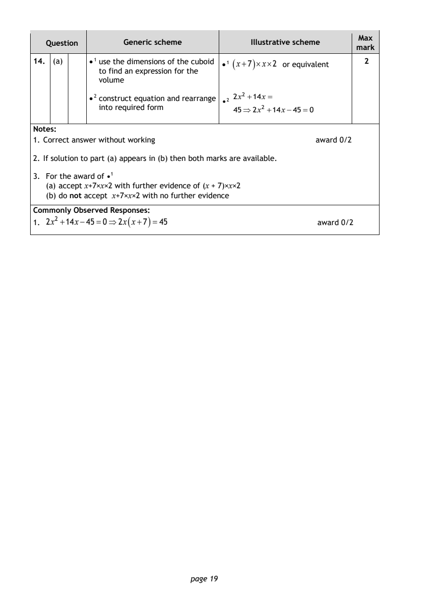
Selectable page text
Max
Question Generic scheme Illustrative scheme
mark
14. (a) • 1 use the dimensions of the cuboid • 1 ( x+7 )×x×2 or equivalent 2
to find an expression for the
volume
• 2 construct equation and rearrange
•²
2x² +14x=
into required form 45⇒2x² +14x−45=0
Notes:
1. Correct answer without working award 0/2
2. If solution to part (a) appears in (b) then both marks are available.
3. For the award of •¹
(a) accept x+7×x×2 with further evidence of (x + 7)×x×2
(b) do not accept x+7×x×2 with no further evidence
Commonly Observed Responses:
1. 2x² +14x−45=0⇒2x ( x+7 )=45 award 0/2
page 19PDF page 20
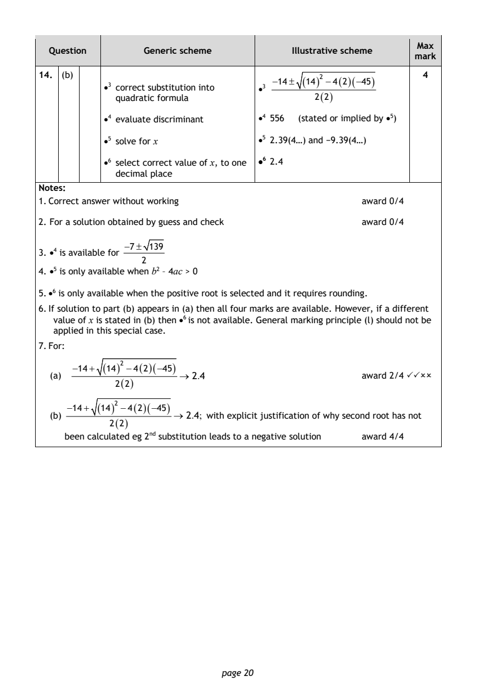
Selectable page text
Max
Question Generic scheme Illustrative scheme
mark
14. (b) 4
−14± ( 14 ) ² −4(2)(−45 )
•3 correct substitution into •3
quadratic formula
2(2)
•4 evaluate discriminant •4 556 (stated or implied by •⁵)
•5 solve for x •5 2.39(4…) and −9.39(4…)
•6 select correct value of x, to one •6 2.4
decimal place
Notes:
1. Correct answer without working award 0/4
2. For a solution obtained by guess and check award 0/4
−7± 139
3. •⁴ is available for
2
4. •⁵ is only available when b² – 4ac > 0
5. •⁶ is only available when the positive root is selected and it requires rounding.
6. If solution to part (b) appears in (a) then all four marks are available. However, if a different
value of x is stated in (b) then •⁶ is not available. General marking principle (l) should not be
applied in this special case.
7. For:
−14+ ( 14 ) ² −4(2)(−45 )
(a) → 2.4 award 2/4
2(2)
−14+ ( 14 ) ² −4(2)(−45 )
(b) → 2.4; with explicit justification of why second root has not
2(2)
been calculated eg 2ⁿ^{d} substitution leads to a negative solution award 4/4
page 20PDF page 21
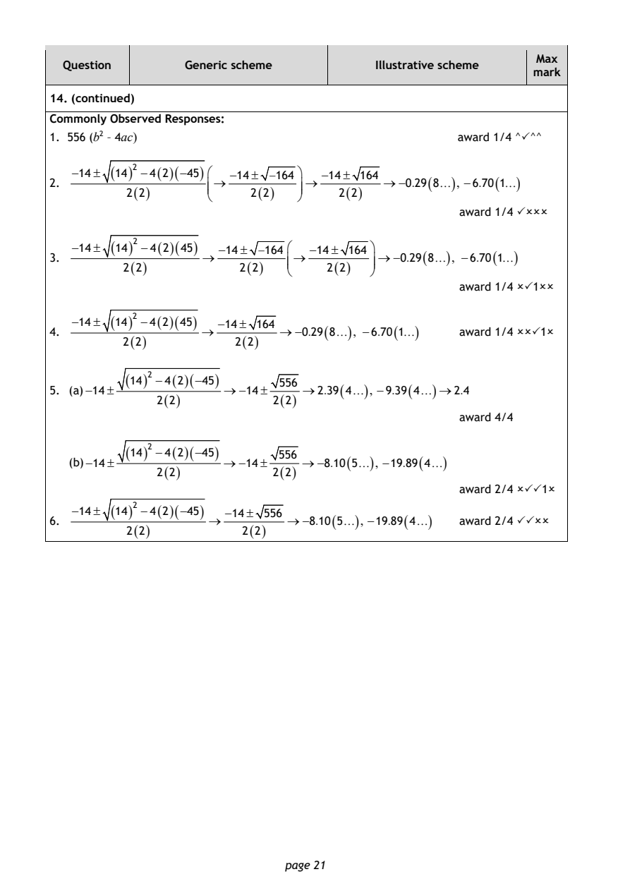
Selectable page text
Max
Question Generic scheme Illustrative scheme
mark
14. (continued)
Commonly Observed Responses:
1. 556 (b² – 4ac) award 1/4 ^^^
−14± ( 14 ) ² −4(2)(−45 ) −14± −164 −14± 164
2. → → →−0.29 ( 8) , −6.70 ( 1)
2(2)
2(2)
2(2)
award 1/4
−14± ( 14 ) ² −4(2)( 45 ) −14± −164 −14± 164
3. → → →−0.29 ( 8) , −6.70 ( 1)
2(2) 2(2)
2(2)
award 1/4 1
−14± ( 14 ) ² −4(2)( 45 ) −14± 164
4. → →−0.29 ( 8) , −6.70 ( 1) award 1/4 1
2(2) 2(2)
(
14
)
²
−4(2)(−45 )
556
5. (a)−14± →−14± →2.39 ( 4) , −9.39 ( 4)→2.4
2(2) 2(2)
award 4/4
(
14
)
²
−4(2)(−45 )
556
(b)−14± →−14± →−8.10 ( 5) , −19.89 ( 4)
2(2) 2(2)
award 2/4 1
−14± ( 14 ) ² −4(2)(−45 ) −14± 556
6. → →−8.10 ( 5) , −19.89 ( 4) award 2/4
2(2) 2(2)
page 21PDF page 22
Paper 2, Question 15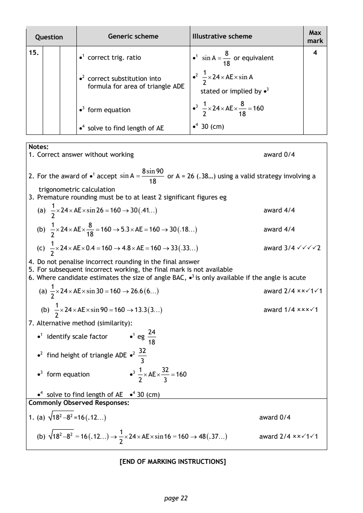
Selectable page text
Max
Question Generic scheme Illustrative scheme
mark
15. 8 4
•1 correct trig. ratio •1 sinA = or equivalent
18
1
•2 correct substitution into •2 ×24×AE×sinA
2
formula for area of triangle ADE
stated or implied by •³
1 8
•3 form equation •3 ×24×AE× =160
2 18
•4 solve to find length of AE •4 30 (cm)
Notes:
1. Correct answer without working award 0/4
8sin90
2. For the award of •¹ accept sinA = or A = 26 (.38…) using a valid strategy involving a
18
trigonometric calculation
3. Premature rounding must be to at least 2 significant figures eg
1
(a) ×24×AE×sin26=160→30(.41) award 4/4
2
1 8
(b) ×24×AE× =160→5.3×AE=160→30(.18) award 4/4
2 18
1
(c) ×24×AE×0.4 =160→4.8×AE=160→33(.33) award 3/4 2
2
4. Do not penalise incorrect rounding in the final answer
5. For subsequent incorrect working, the final mark is not available
6. Where candidate estimates the size of angle BAC, •³ is only available if the angle is acute
1
(a) ×24×AE×sin30=160 →26.6(6) award 2/4 11
2
1
(b) ×24×AE×sin90=160 →13.3(3) award 1/4 1
2
7. Alternative method (similarity):
24
•1 identify scale factor •1 eg
18
32
•2 find height of triangle ADE •²
3
1 32
•3 form equation •3 ×AE× =160
2 3
•4 solve to find length of AE •⁴ 30 (cm)
Commonly Observed Responses:
1. (a) 18²−8²=16(.12) award 0/4
1
(b) 18²−8² =16(.12)→ ×24×AE×sin16=160 → 48(.37) award 2/4 11
2
[END OF MARKING INSTRUCTIONS]
page 22